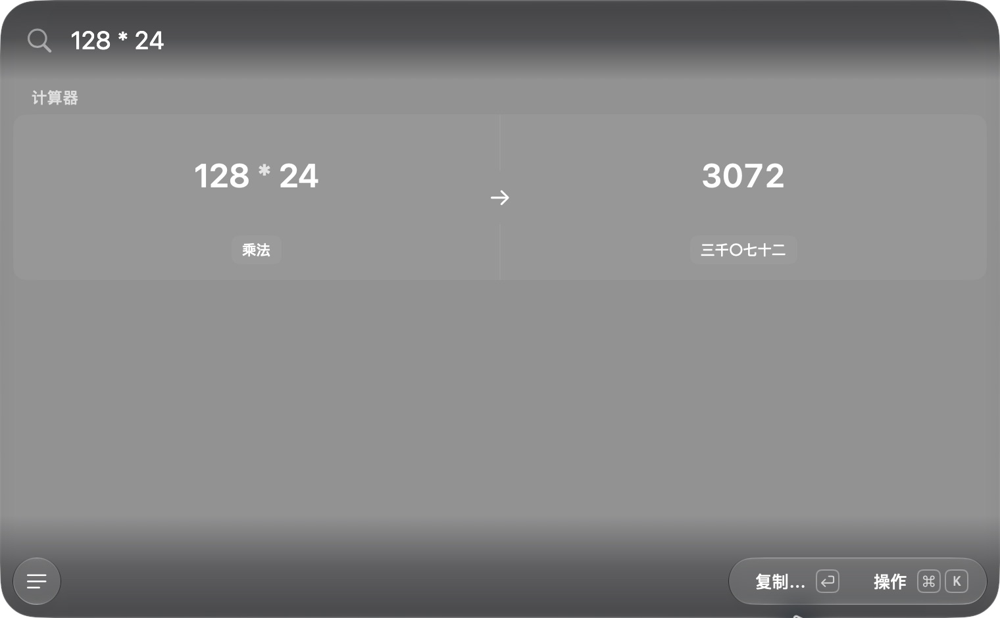
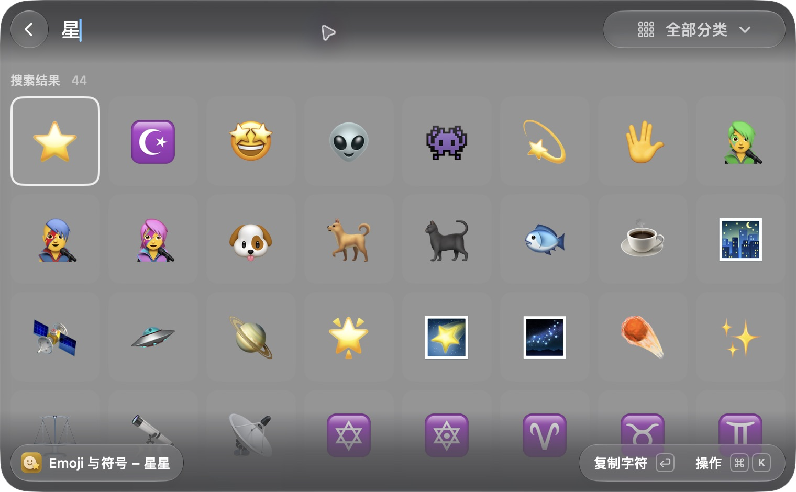

打开应用
按名称、拼音或模糊关键词查找应用，把常用项收藏起来。
为 macOS 而生 · DEVELOPER PREVIEW
应用、文件、常用工具。把日常操作收进一个原生搜索窗口，让双手留在键盘上。
macOS 26+ · Apple Silicon · 手动安装 · 未经 Apple 公证

OPTION + SPACE
按下 Option + Space，输入你要找的内容。用方向键选择，按 Return 打开。
按名称、拼音或模糊关键词查找应用，把常用项收藏起来。
结合 Spotlight 与本地补充索引，在你授权的目录中搜索。
计算、Emoji、快捷链接与脚本命令，从同一个窗口进入。
EMOJI & SYMBOLS
搜索 Emoji 与符号，浏览结果，再复制需要的字符。少一次窗口切换，多一点专注。

剪贴板历史、文件访问等能力按需启用。数据保存在本机；文件 AI 仅在主动提交时向你配置的服务发送问题及所选上下文，服务可能收费。没有内置遥测或云同步。
BETA 1 / BUILD 27
当前公开下载为 1.0.2 Beta 1（build 27）。这是开发预览，部分系统交互仍需验证。
下载 DMG 与 SHA-256 文件并核对校验和。打开 DMG，将 Keylane 拖到“应用程序”，再打开应用。本包使用 ad-hoc 临时签名，未公证，系统可能阻止首次打开。请阅读 Apple 的安全说明；本次需要手动安装。
Apple：在 Mac 上安全地打开 App ↗默认安全设置下首次打开、从 Alpha 升级、隔离启动/退出/重复启动及合成配置升级仍待验收。Navigation 本轮真实焦点复验未通过；键盘与权限流程、多屏、全屏、Spaces 和真实目标应用行为仍有验证缺口。Intel 和通用二进制未验证。
Raycast 扩展兼容、配置迁移和 iPhone 应用启动不属于此 Beta。功能存在于开发分支或草稿 PR，不等于已发布或已完成实机验收。
当前 dev 源码采用 GPL-3.0-or-later，允许在遵守条款的前提下商业使用、修改和再分发。Beta 1（891ab2c）及当前 main（877ca22）仍采用各自版本附带的 PolyForm Noncommercial 许可；GPL 变更不追溯旧标签或安装包。